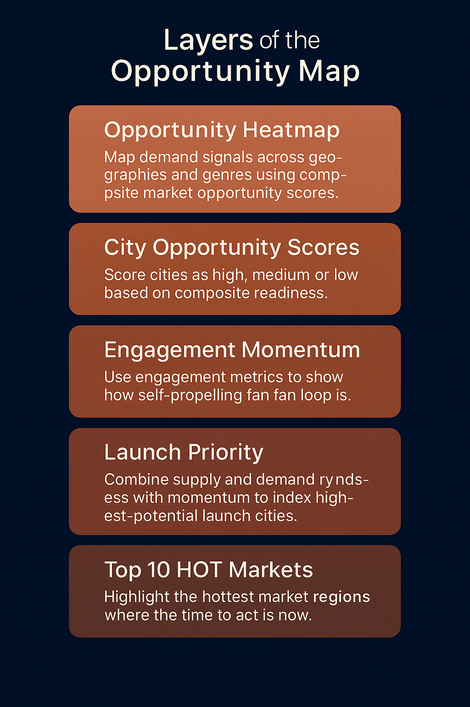

Note: This page is intentionally set to noindex, nofollow so names won’t appear in search results.
With a mission to democratize access to culture and entertainment in real life
Best experienced with audio.
Shows where / what / when to launch music experiences using search interest, event density, pricing, and genre diversity.
If the embed is blocked, open the map in a new tab →
Visual breakdown of how data layers combine to shape readiness, engagement, and launch priority.
Each layer reflects a composite measurement of demand, readiness, and momentum across the Fever ecosystem.
Combines demand, price, supply, and culture to find where Fever can thrive.
Maps venue, promoter, and brand depth to accelerate supply.
Quantifies Fever’s in-app growth loops: referrals, vouchers, loyalty, geo.
Measures how co-created shows convert to loyalty and revenue.
Closes the loop: partner ROI, audience retention, campaign effectiveness.
Ranks cities by both structural opportunity and self-propelling growth.
Scroll or click through below. On phones we use a PDF.js viewer for perfect inline rendering.